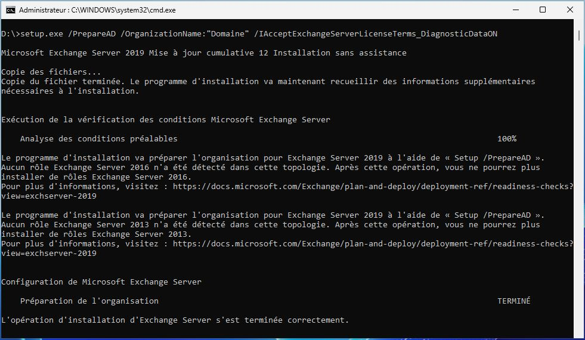
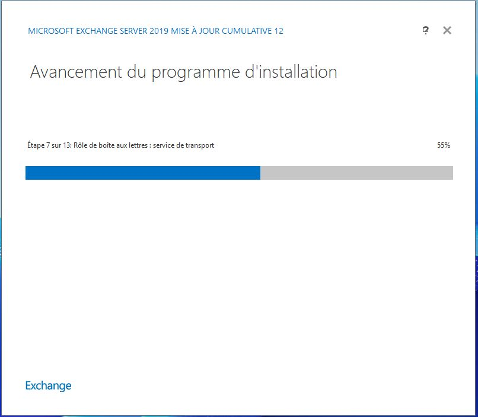
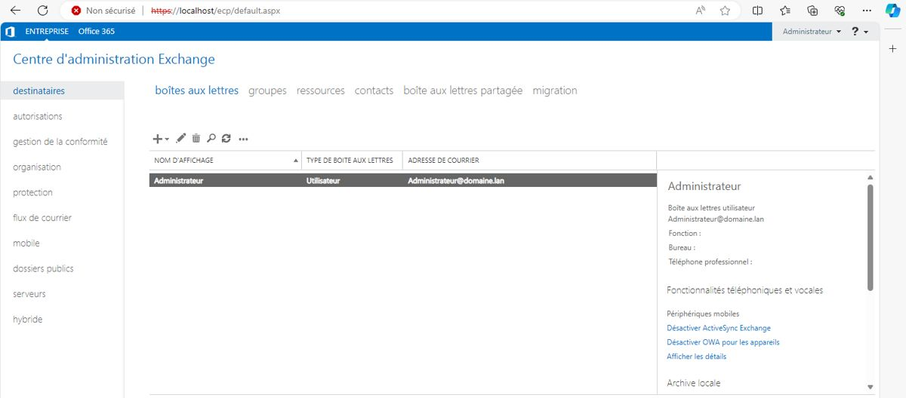

BTS · SISR
Serveur de messagerie Exchange 2019
Installer Exchange 2019 sur Windows Server 2025 : prérequis, préparation de l'annuaire, installation, validation.
- Exchange 2019 CU12
- Windows Server 2025
- Active Directory
- PowerShell
Contexte
Déployer une messagerie d'entreprise intégrée à un domaine Active Directory.
Résultat
Exchange installé, centre d'administration (EAC) accessible et validé avec le compte d'administration du domaine.
Étapes de réalisation
- Prérequis. Adressage statique, jonction au domaine, composants C++, URL Rewrite, UCMA, rôles IIS via PowerShell.
- Active Directory. Extension du schéma puis préparation de l'organisation (PrepareSchema, PrepareAD).
- Installation. Assistant, rôle boîte aux lettres, 13 étapes.
- Optimisation. Analyse anti-programmes malveillants désactivée pour le labo, via l'Exchange Management Shell.
- Validation. Connexion à l'EAC.
Captures



Technologies utilisées
- Messagerie
- Active Directory
- PowerShell
- Windows Server